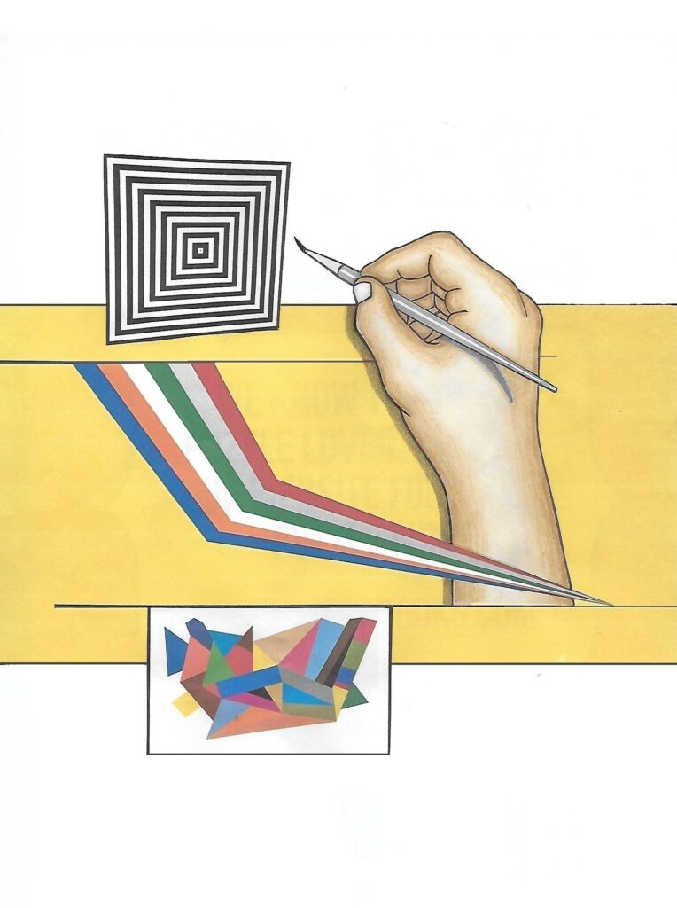

Canvas, Color, & Vision
Presented by: Ron Jerak & Michael Preski
What happens when you bring an Abstract painter and a Surrealist together in one exhibition? The audience gets to take a journey through the artists’ story laid out on canvas, doused in color and covered in a vision.
Ron Jerak creates the images he envisions by using strong color and contrast, incorporating straight lines and sharp angles. Symmetry is often present in his works, though asymmetrical compositions are employed as well. Michael Preski creates intricate and often highly detailed imagery with multiple mediums, layering different segments until they form the final piece. Like Ron’s works, they can cover a full range of concepts with their subjects, but all of them tell a story. Both of their stories are contained within each individual piece as well as the whole of their works. These stories are often drawn from everyday events, emotions and general life experiences as how the viewers experience the world. And though every piece is open to the audience’s interpretation, the artists guide their perceptions using the visuals themselves as a map. So feel free to join these two artists as they share their stories depicted in vibrant colors and unwavering imagery.